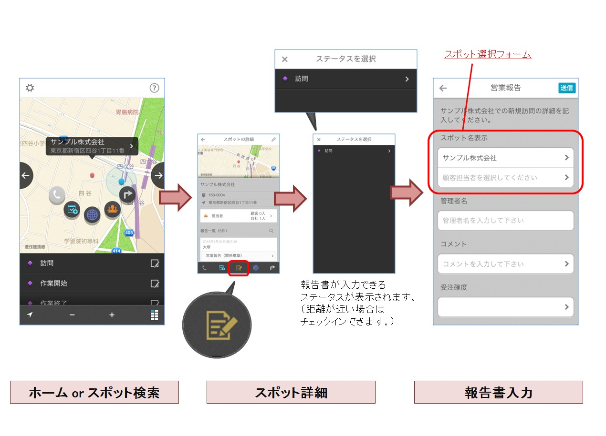

最新情報¶
報告書にバーコード読み取り機能を追加しました。現場での活用方法がさらに広がります。¶
現場で各種コードを読み取り、報告書に文字を自動入力できます。
報告書の設定
報告書の設定
- 管理サイトの[報告設定] > [フォーマット設定]より報告書を作成してください。(管理サイトマニュアルP.46参照)
- フィールド追加より[バーコードリーダー]のフィールドを追加することで利用可能です。
アプリでの利用
- アプリの[設定]より[設定を同期]を実行することで、報告書が利用できるようになります。
- 報告書内の「コードをスキャン」の箇所をタップするとカメラが起動して、バーコードの読み取りができます。
利用できるバーコードの種類 Android CALENDAR_EVENT, CODABAR, CODE_128, CODE_39, CODE_93, CONTACT_INFO, DATA_MATRIX, DRIVER_LICENSE, EAN_13, EAN_8, EMAIL, GEO, ISBN, ITF, PDF417, PHONE, PRODUCT, QR_CODE, SMS, TEXT, URL, WIFI iOS7以降 UPCE, Code39, Code39Mod43, EAN13, EAN8, Code93, Code128, PDF417, QR, Aztec iOS8以降 上記 + Interleaved2of5, ITF14, DataMatrix 注釈
本機能が利用できるバージョン
- iOS ver 3.5.4 以降
- Android ver 3.5.4.0 以降
ユーザーのアプリバージョンを確認するには
- 管理サイトの[グループ・ユーザー設定] > [ユーザー管理]の一覧リストに表示されている「アプリバージョン」をご確認ください。
「アプリバージョン」の横の三角アイコンで並べ替えができます。


v3.5.0:スポット機能の強化により、現場での活用方法がさらに広がります。¶
アプリバージョンv3.5.0で以下のスポット機能を強化して、現場の操作時間を減らし、 さらに活用できるケースを増やします。
- スポット検索の高速化
- 検索機能の強化
- 条件の項目追加
- 検索条件の保存
- 自動縮尺のルール変更
活用方法については以下の動画をご覧ください。
重要
音が流れますので、音量にご注意ください。
スポットタグが多い企業様の操作を、簡単にわかりやすくします。¶
タググループ機能により複数のスポットタグをまとめることができます。
課題1¶
- 地図で顧客を見る時に、いつも決まって選ぶタグを毎回選択するのが面倒くさい。
利用する時の操作¶
- 管理サイトの[位置情報画面] > [スポット]には新たに「スポットタグ分類」という入力項目が増えます。
- ここで分類を選択することで、まとめてスポットタグを選らんで検索することができます。
- アプリの[スポット検索]では、スポットタグの欄に分類が表示されます。
- 分類をタップすると、仕分けされたスポットタグが表示されます。個別選択、まとめて選択ができます。
課題2¶
- スポットタグが10個以上あるので、選ぶ時にいつも迷う。

利用する時の操作¶

- アプリの[スポット検索]では、スポットタグの欄にはすべてのスポットが表示されず、分類されたものはまとまって表示されます。
- すっきりして見やすくなります。
- タグを探す時も、「見込み」の中から「25%」を探せばよいので、迷わず見つけることができます。
運用上の注意¶
- スポットタグはそれぞれ１つの分類にしか含めることができません。
- 頻繁に検索に使うタグの組み合わせがある場合は、極力そちらを優先して分類してください。
スポットの詳細画面から報告書が入力できるようになります。¶
スポット検索後にそのまま報告書が入力できます。
利用シーン¶
- チェックインを忘れてしまった場合
- リモートで顧客対応をした場合
アプリの操作¶

- 「スポットの詳細」画面の下部メニューに報告ボタン（画像）が表示されるようになります。
- 報告ボタンをタップすると、報告書が入力できるステータスが表示されます。
- チェックイン可能なステータスを選び、該当スポットがチェックイン範囲内に存在すればチェックイン可能です。
- ホーム画面での打刻と同様、履歴にも残ります。
- 報告書は設定によらず、すぐに入力画面を表示します。
運用上の注意点¶
- 以下の仕様が、ホーム画面から打刻して報告書を入力した場合と異なります。
スポットの詳細画面から報告書を入力した場合は、そのスポットの報告一覧に報告書が残ります。
- チェックインしなくてもスポットの報告一覧に報告書が残ります。
- 報告書のフォーマットに「スポット選択フォーム」がなくてもスポットの報告一覧に報告書が残ります。
- スポットAから入力した報告書の「スポット選択フォーム」に別のスポットを選択しても、スポットAの報告一覧に報告書が残ります。
※ チェックインをしなかった場合は、報告書CSVデータに訪問日が入りません。
| 経路 | スポットA | スポットB | CSV出力時の訪問日 |
|---|---|---|---|
| ホーム画面 | なし | 報告書あり | なし |
| スポットの詳細画面 | 報告書あり | なし | なし |
| 経路 | スポットA | スポットB | CSV出力時の訪問日 |
|---|---|---|---|
| ホーム画面 | チェックイン履歴あり | 報告書あり | なし |
| スポット詳細画面 | 報告書あり | なし | なし |
| 経路 | スポットA | スポットB | CSV出力時の訪問日 |
|---|---|---|---|
| ホーム画面 | 報告書あり | なし | あり |
| スポット詳細画面 | 報告書あり | なし | あり |
本機能が利用できるバージョン
- iOS ver 3.4.3
- Android ver 3.4.3
スポット権限の細分化（2015/1/23）¶

{kind=link}
{kind=link}
{kind=link}
{kind=link}
アプリのスポット機能改善 （2015/1/23）¶
上記、スポット権限の細分化と同じタイミングでリリースします。
主な変更点¶
スポット検索の強化¶
- キーワード検索
- 従来はキーワードに一致するスポット名を検索するだけでしたが、以下のように変更します。
- 名前、カナ、コード、所在地、電話番号、コメントを対象に検索するようにします。 ※ 名前を優先とします。
- 検索結果が300件を超える場合は、地図の中心地から近い順に表示します。
- 「現在地からの検索範囲」の撤廃
- 従来はスポット検索の際に、現在地からの検索範囲（1000m,3000m・・・)を選択して検索する必要がありましたが、これを撤廃して以下のように変更します。
- 地図の中心点から最大300件のスポットを検索します。
{kind=link}
- ランドマーク検索の追加
- スポット地図画面にランドマーク検索機能を追加します。
- 地名やランドマークを入力して検索すると、地図の中心地点が最初にヒットした地名、ランドマークになります。
- その位置を中心に最大300件のスポットを検索します。

- 操作の変更点
- 従来の検索方法との違いは以下のようになります。
- 手順が簡略化され、現在地から離れたスポットも探しやすくなります。